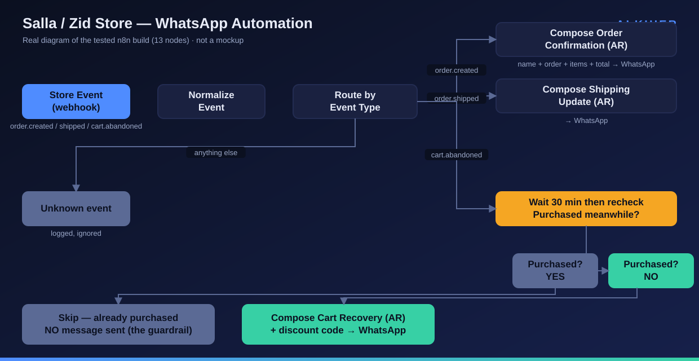
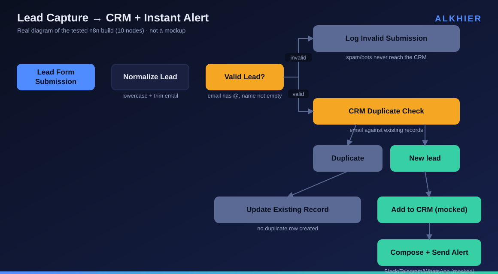
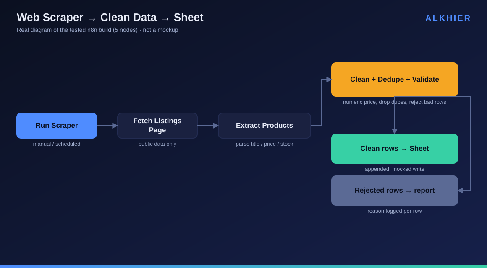

n8n workflows · AI chatbots · WhatsApp automation for Salla & Zid stores · scrapers & business systems. Tested, documented in plain language, running on infrastructure you own.
Get a free feasibility answer See working demosFixed prices. Working preview before final payment. 7-day free fix window on everything.
Lead capture → CRM, order flows, data syncs, reports, AI-powered steps. Error handling included, not optional.
from $50
Website, WhatsApp or Telegram. Grounded in your business info, hands off to a human exactly when it should.
from $100
Order confirmations, shipping updates and abandoned-cart recovery on WhatsApp — built for Gulf e-commerce.
from $25
Public data → cleaned, deduplicated, delivered to your sheet on schedule. Honest about what's scrapeable.
from $50
Notion / Airtable / Google Sheets systems that update themselves instead of eating your evenings.
from $60
Monthly retainer: monitoring, fixes and small improvements for systems I've built.
from $75/mo
Every demo below is a real, running build, tested end to end — diagrams are generated directly from the actual tested workflow, not drawn by hand.
Order confirmed → instant personalized WhatsApp message → shipping updates → abandoned-cart recovery with stop-on-purchase logic. Built and tested with 3 passing executions, including the edge case: a customer who buys during the wait window gets no message.

Form submission → validated & deduplicated → CRM row → team notification. Tested against messy input: normalized "JANE@acme.com " correctly caught as a duplicate, bot junk rejected before it ever reached the CRM.

Public listing pages → parsed → cleaned, deduplicated, validated → appended to a sheet, with a skipped-rows report explaining every rejection. Tested turning 4 dirty sample rows into 2 clean rows plus a labeled skip report.

Answers from the business's own documents, refuses to guess, hands off to a human with a conversation summary.
Because it's true and it's the advantage: I design and build with advanced AI tooling, which is why delivery takes days instead of weeks and why a custom demo costs me minutes instead of hours. Every build is tested against your real use case before it ships — speed here doesn't mean corners cut, it means a different way of working.
أتمتة متاجر سلة وزد بالواتساب، بوتات ذكاء اصطناعي ترد على عملائك من معلومات أعمالك، ربط تطبيقاتك ببعضها، وجمع البيانات في جداول جاهزة. أسعار ثابتة، نسخة تجريبية قبل الدفع النهائي، توثيق مبسط بالعربي، و7 أيام دعم مجاني بعد التسليم. كل النظام ملكك: حساباتك ومفاتيحك — بدون اشتراكات.
Message me your most annoying manual task — I'll tell you honestly if automation is worth it, usually within the hour.
[gig links added at launch]
[روابط الخدمات عند الإطلاق]
[business email added at launch]